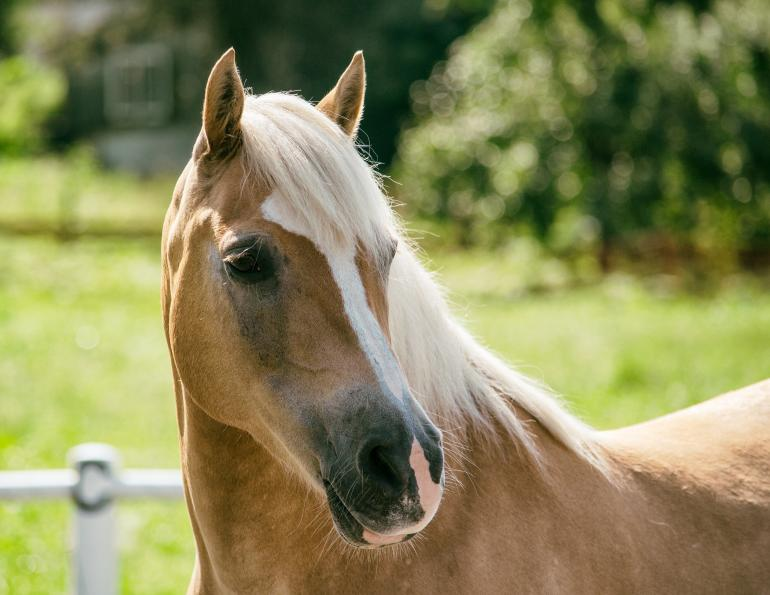
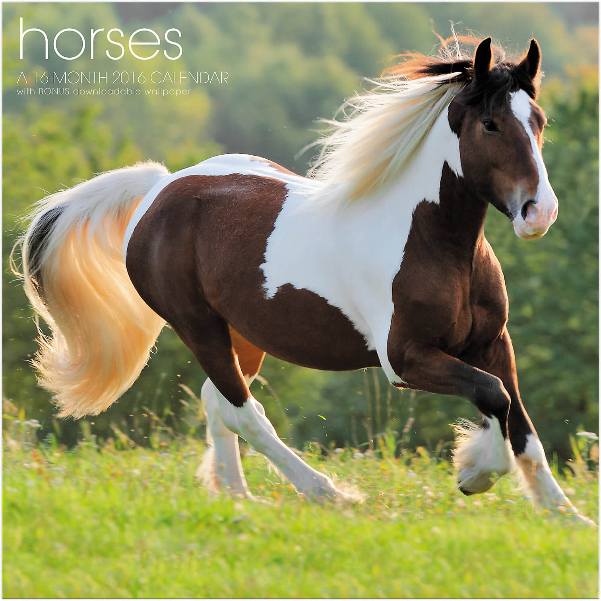

Hildogo the horse
 Today i will be talking about the best horse hildogo. Hildogo was the horse i used to ride he was a really smooth ride. Im not talking about the movie hildogo at Kohl's Ranch there is a horse thats named hildogo.I love horses,they are my first favorite animals and my friend saige likes unicorns and horses to.
I love him so much we had some funny moments together. The last time i went back i had no clue witch one he was cause there was alot more painted horses there but of course i look over there he was rolling in dirt i called him over he seen me then he started running over to me, me and him got so exited.